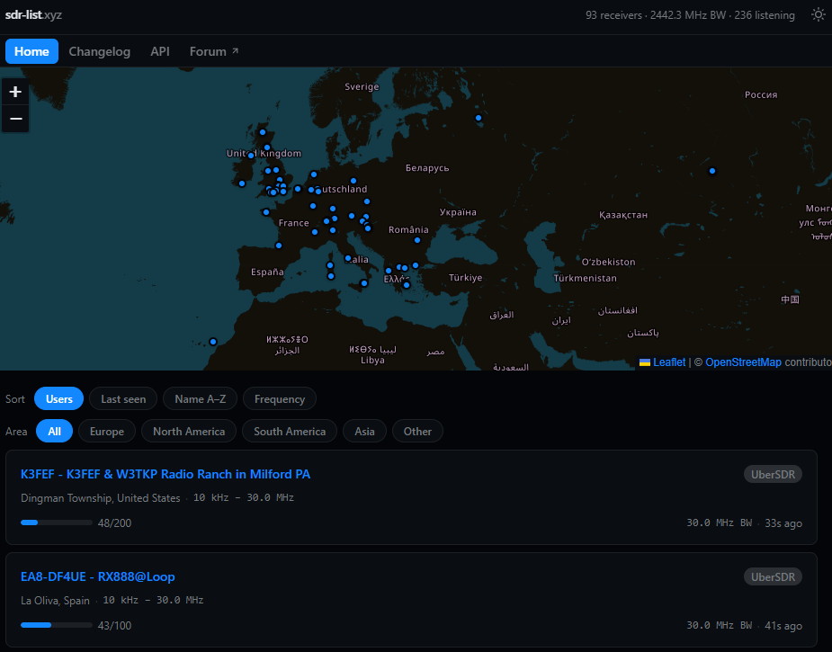

Eine Landkarte voller Empfangsperspektiven
Mit sdr-list.xyz zu UberSDR, PhantomSDR+ und NovaSDR – und mit einem fairen Vergleich zum passenden Empfangsort.

Screenshot: HB3XDC · sdr-list.xyz · Karte: © OpenStreetMap-Mitwirkende / Leaflet. Momentaufnahme.
Ein Standortwechsel ohne Reise
Ein entfernter Empfänger kann ein Signal hörbar machen, das im eigenen Störnebel verschwindet. Auf sdr-list.xyz findest du eine Karte und eine nach Regionen eingrenzbare Empfängerliste. Sortieren lässt sie sich unter anderem nach Name, Frequenz, Nutzung und letzter Sichtung. Beim Prüfen waren auch Luzern und Perfugas eingetragen.
Software und Hardware sind zwei verschiedene Dinge
Der RX888 MKII digitalisiert einen breiten Empfangsbereich. Welche Oberfläche daraus entsteht, bestimmt die Serversoftware. UberSDR nutzt ka9q-radio als Empfangsbasis. PhantomSDR+ ist eine eigene WebSDR-Softwarefamilie. NovaSDR entwickelt einen anderen Ansatz mit Rust-Backend weiter; über SoapySDR werden auch Geräte neben dem RX888 eingebunden. Daher ist das Verzeichnis keine ausschliessliche RX888-Liste.
Die Softwarebezeichnung hilft bei der Orientierung, die Antenne und der Standort bleiben mindestens ebenso wichtig. Ein kleiner Empfänger an einem ruhigen Standort kann eine Station mit grösserem Rechner mitten im lokalen QRM deutlich übertreffen. Nutzerzahl und empfangene Bandbreite sind keine Qualitätsnoten.
Ein Vergleich in fünf Minuten
- Für eine europäische Verbindung zuerst Europe wählen; für einen weiten Ausbreitungsweg gezielt den anderen Kontinent ausprobieren.
- Den abgedeckten Frequenzbereich und die Stationsbeschreibung lesen. Ein Eintrag auf der Karte ist noch kein Test des aktuellen Audios.
- Luzern und eine Vergleichsstation öffnen. An beiden Frequenz, Betriebsart und Filterbreite angleichen.
- Dasselbe Signal mehrmals hin und her hören. Lautstärke ungefähr anpassen; lauter ist nicht automatisch verständlicher.
- UTC-Zeit, Sender und Ergebnis notieren. Nach einigen Stunden wiederholen: Ausbreitungswege ändern sich.
Welches Verzeichnis wofür?
Das UberSDR-Verzeichnis konzentriert sich auf dieses Projekt. KiwiSDR Public bietet einen Einstieg in die Kiwi-Welt; websdr.org in klassische WebSDRs. Die Listen ergänzen einander. Behandle fremde Empfangsplätze als geteilte Ressourcen: unbenutzte Audiostreams schliessen und Hinweise der Betreiber beachten.
Kartengrundlage im Screenshot: © OpenStreetMap-Mitwirkende. Die dargestellten Nutzerzahlen sind eine Momentaufnahme.